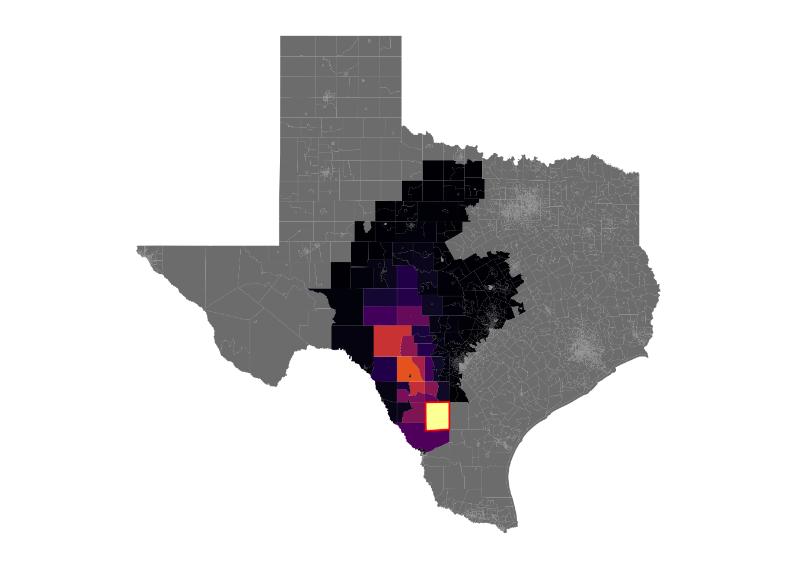

5 link checkpoint
library(tidyverse)
library(magrittr)
library(lubridate)
library(sf)
library(viridis)
library(ggthemes)
disperser_input <- read_rds("../data/jobs_input/disperser_input.rds")
tracts_sf <- read_rds("../data/preprocessed/tracts_sf.rds")5.1 check 1
- check disperser was able to link all emissions (compare with
ls | wcwhere hyspdisp files are located)
#### number of files disperser will create for each year month
disperser_input %>%
distinct(year, month, ID) %>%
group_by(year, month) %>%
summarise(n = n())## `summarise()` has grouped output by 'year'. You can override using the
## `.groups` argument.## # A tibble: 66 × 3
## # Groups: year [6]
## year month n
## <dbl> <dbl> <int>
## 1 2015 7 44
## 2 2015 8 44
## 3 2015 9 48
## 4 2015 10 44
## 5 2015 11 45
## 6 2015 12 47
## 7 2016 1 43
## 8 2016 2 42
## 9 2016 3 45
## 10 2016 4 38
## # … with 56 more rows5.2 check 2
- look at monthly hyads for specific month and sources
link_units <- read_rds("../data/jobs_output/linked_counties_2016_7_8.rds")
link_units %<>%
rename(GEOID = geoid, hyads = N) %>%
mutate(year = as.integer(str_sub(month, 1, 4)),
month = as.integer(str_sub(month, 5, -1)),
date = ymd(sprintf("%04d%02d01", year, month)))GEOID_ = c('48235950100', '48013960600', '48149970600', '48283950300')
plots <- list()
for (x in GEOID_) {
hyads_sf <- tracts_sf %>%
left_join(
link_units %>%
filter(ID == x, year == 2016, month == 8) %>%
dplyr::select(GEOID, hyads)
)
plots[[x]] <- hyads_sf %>%
ggplot() +
geom_sf(aes(fill = hyads), size = 0) +
geom_sf(
data = filter(tracts_sf, GEOID == x),
color = "red", fill = NA
) +
scale_fill_viridis(option = "B") +
theme_map() +
theme(legend.position = "none")
}## Joining, by = "GEOID"
## Joining, by = "GEOID"
## Joining, by = "GEOID"
## Joining, by = "GEOID"plots## $`48235950100`
##
## $`48013960600`##
## $`48149970600`##
## $`48283950300`
5.3 check 3
- compare all-region weighted vs unweighted hyads for a given month
hyads_months <- link_units %>%
filter(year == 2016, month == 8) %>%
left_join(
disperser_input %>%
filter(year == 2016, month == 8) %>%
distinct(ID, start_day, w) %>%
group_by(ID) %>%
summarise(w = sum(w))
) %>%
group_by(GEOID) %>%
summarise(
unweighted_hyads = sum(hyads),
weighted_hyads = sum(w * hyads)
)## Joining, by = "ID"hyads_sf <- left_join(tracts_sf, hyads_months)## Joining, by = "GEOID"hyads_sf %>%
ggplot() +
geom_sf(aes(fill = unweighted_hyads), size = 0) +
scale_fill_viridis(option = "B") +
theme_map() +
theme(legend.position = "none") +
labs(title = "unweighted")hyads_sf %>%
ggplot() +
geom_sf(aes(fill = weighted_hyads), size = 0) +
scale_fill_viridis(option = "B") +
theme_map() +
theme(legend.position = "none")